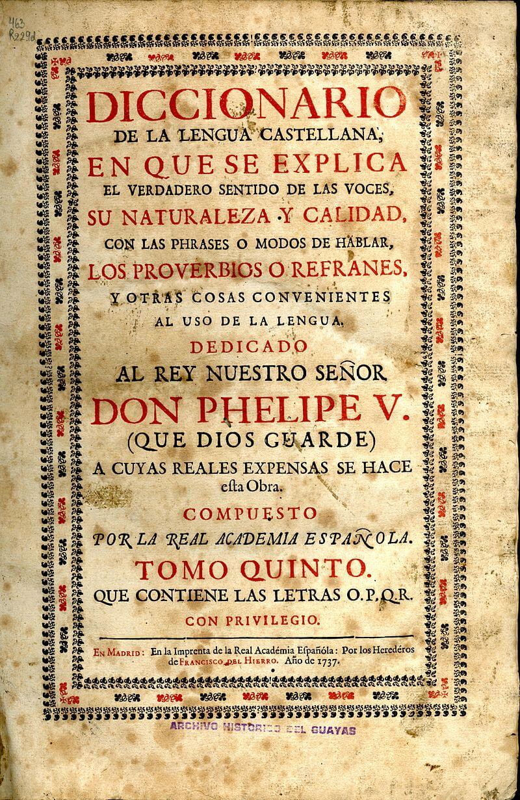

La Real Academia Española (RAE)3 es una institución cultural con sede en Madrid (España). Esta y otras veintitrés academias de la Lengua correspondientes a cada uno de los países donde se habla el español conforman la Asociación de Academias de la Lengua Española (ASALE).

Tomo V de la edición del Diccionario de la Lengua Castellana en 1737
Se dedica a la regularización lingüística mediante la promulgación de normativas dirigidas a fomentar la unidad idiomática entre o dentro de los diversos territorios que componen el llamado mundo hispanohablante; garantizar una norma común, en concordancia con sus estatutos fundacionales: «velar por que los cambios que experimente [...] no quiebren la esencial unidad que mantiene en todo el ámbito hispánico».4
Fue fundada en 1713 por iniciativa del ilustrado Juan Manuel Fernández Pacheco, VIII marqués de Villena y duque de Escalona, a imitación de la Academia Francesa. Al año siguiente, el rey Felipe V aprobó su constitución y la colocó bajo su protección.5
Las directrices lingüísticas que propone se recogen en diversas obras. Las prioritarias son el diccionario, abreviado DRAE (art. 2.º de sus estatutos), editado periódicamente veintitrés veces desde 1780 hasta hoy; y la gramática (4.º), editada entre 2009 y 2011.6
Desempeña sus funciones en la sede principal, inaugurada en 1894, en la calle Felipe IV, 4, en el barrio de Los Jerónimos, y en el Centro de Estudios de la Real Academia Española y de la ASALE, en la calle Serrano 187-189, en 2007.7